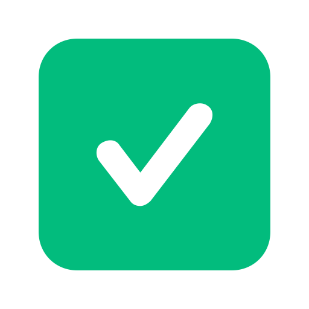

Sounds Cool! But what exactly is this...
Need help with your resume? I’m here to assist you! 
After helping friends with their resumes, I’m excited to offer my support to you. We can meet online to discuss your resume in detail and work together to make it ready for your job applications. Book a quick, completely free 15-minute session below for a focused review and valuable tips — no subscription, account, no-nothing.
Want to make an appointment?  book it here!
Want your resume/cover letter reviewed? Upload it here!
book it here!
Want your resume/cover letter reviewed? Upload it here!
How Krauss Review Got Started
How do I land an internship? What’s more important — soft skills or technical know-how? What do I put on my resume? If you’re a commerce student, you’ve probably asked these a million times—at least that has been my experience at the University of Toronto Mississauga.
After attending (and now hosting)case competitions, networking events, and resume workshops, I’ve picked up a few tricks on resume writing. Still not convinced? Well, I scored an internship with KPMG in U.S. corporate tax — so I must be doing something right!
After helping friends, family, and other students, I figured it was time to put all this knowledge in one place. At Krauss Review, I offer straightforward advice to help you create a resume that highlights your strengths and stands out to employers.
But Hey! What's the Catch?
Well, considering you read this far, I'm glad you asked! There is no catch. No subscriptions, hidden fees, favors, or sign-ups required. This work of mine is pro bono for now—my goal is to provide genuine support without any strings attached.
If you find my tips helpful and want to show appreciation, you’re welcome to buy me a coffee (donate) if you'd like. It’s entirely optional and goes a long way in supporting my efforts.